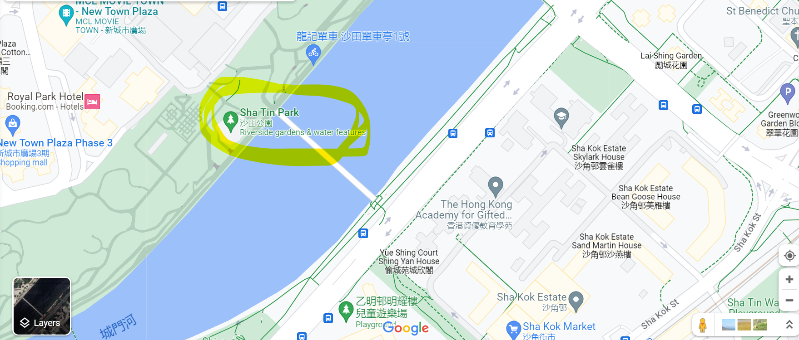
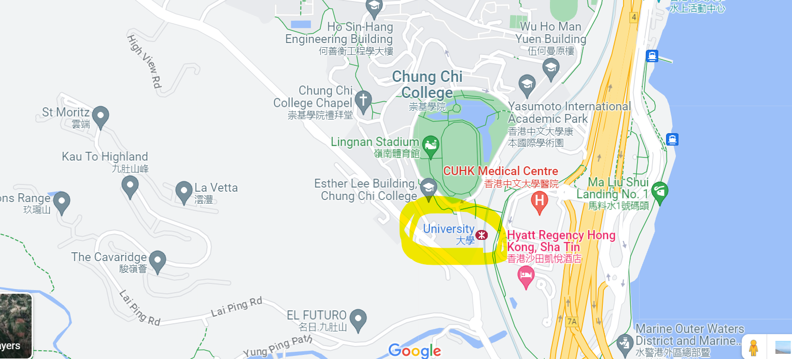

Your are recommend to start at ShaTin Park
And I always end my trip in University Station
That's all!!!
This trip takes about 1hr, so take care of your own.
Part of the walkway needs to pass through the jungle, please be careful of the flying insects inside.